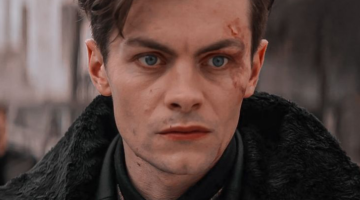
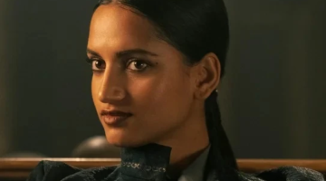
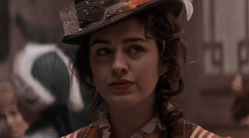
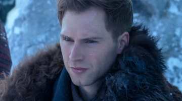
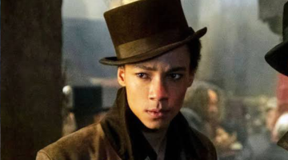
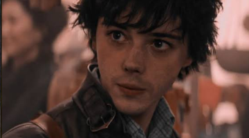

Kaz Brekker
Kaz Brekker faz parte do núcleo de protagonistas da duologia literária "Six of Crows", sendo o personagem principal ele é o lider do grupo e um dos líderes criminosos do bairro onde eles vivem, ele organiza as missões que os protagonistas realizam.

Inej Ghafa
Inej Ghafa faz parte do núcleo de protagonistas da duologia literária "Six of Crows", a personagem é a espiã do bando, e usa suas habilidades de espionagem pra obter informações para Kaz, além de ser o seu par romântico ao fim da obra.

Nina Zenik
Nina Zenik faz parte do núcleo de protagonistas da duologia literária "Six of Crows", a personagem é uma bruxa, sendo a mais habilidosa do grupo, seus poderes envolvem o controle do corpo humano e cura, e, ao fim da obra, o controle de corpos mortos.

Matthias Helvar
Matthias Helvar faz parte do núcleo de protagonistas da duologia literária "Six of Crows", o personagem é um soldado de elite denominado drüskelle, sendo o melhor do grupo em combate físico, ele também é o par romântico de Nina, e ao fim da obra, é o único dos protagonistas a morrer.

Jesper Fahey
Jesper Fahey faz parte do núcleo de protagonistas da duologia literária "Six of Crows", o personagem é um atirador de elite, e também é um bruxo, cujas habilidades incluem a manipulação de matéria sólida, além de ser o alívio cômico do grupo na obra.

Wylan Van Eck
Wylan Van Eck faz parte do núcleo de protagonistas da duologia literária "Six of Crows", o personagem é herdeiro do mais rico mercador da cidade, Jan Van Eck, e é um habilidoso alquimista, apesar de ser disléxico e inexperiente no mundo do crime, ele também é o par Romântico de Jesper na obra.